Inversión · 24K USDDel Valle · Back To School 2027 · Chile
Propuesta de medios. Una historia, tres pantallas: YouTube presenta, las apps juegan y Roblox deja entrar al Dragón.
Ruta expresa: lo esencial en pocos minutos, con “detalle” a un clic. Explorar todo: abre cada sección completa.
Resumen
Entre los chicos de 3 a 12 años de Chile, el 33,5% elige Coca-Cola como su refresco favorito. En jugos, el 8,8% elige Del Valle y el 18,4% no tiene una marca favorita. La marca ya es conocida: lo que hay que construir es la preferencia en jugos.
Non-skippable instala “El viaje épico” en los canales que los chicos ya miran.
Game Ad llega a los chicos mientras juegan, con el Dragón como protagonista.
Un formato de video en un nuevo touchpoint con la audiencia core de Del Valle para posicionarnos en el segmento 13-17.
elige Coca-Cola como refresco favorito
elige Del Valle como jugo favorito
inversión total · ver detalle
Fuente: U18 Radar · Chile · 3-12 · refresco favorito (n=166) y jugo favorito (n=170); olas 2025.
1 · Entender · U18 Radar
Panorama completo del hogar: cómo piensan, consumen y deciden teens, tweens y kids. Elegí un tema.
usa YouTube, la plataforma más elegida. Llega a 8 de cada 10 chicos de 3 a 12.
de quienes lo usan lo mira todos los días
Fuente: U18 Radar · Chile · 3-12 · plataformas (n=263) y frecuencia (n=171, quienes usan YouTube); 58% = a diario.
de los que juegan videojuegos lo hace todos los días
usa un smartphone habitualmente
tiene Roblox entre las apps de su celular o tablet
49% juega Roblox principalmente en el celular · 20,1% mira let’s plays en YouTube.
en juegos del último mes · 44% lo jugó
en videojuego favorito · 32% lo elige
juega desde el celular (base acotada, n=60)
descubre juegos por sus amigos
Fuente: U18 Radar · Chile · 3-12 · frecuencia de juego (n=102), dispositivos y apps (n=263), juegos del último mes (n=298), dispositivo principal (n=152), YouTube (n=160); olas 2025. Teens: 13-18, ola mayo 2026.
recibe cosas porque un adulto se las compra cuando las necesita
tiene dinero de bolsillo propio
no tiene autorizado gastar sin consultar a sus padres
Fuente: U18 Radar · Chile · Kids 3-12, olas 2024-2025: gasto y dinero de bolsillo (n=63); padres: gasto autorizado (n=143). Por edad: 3-5 (n=19), 6-9 (n=26), 10-12 (n=18).
no tiene una marca de jugo favorita
elige Del Valle como su jugo favorito
Fuente: U18 Radar · Chile · 3-12 · jugos (n=170) y refrescos (n=166); olas 2025.
Dónde vieron su anuncio favorito (no toda la exposición).
Es el perfil de quien lleva luncheras al colegio: llega a 8 de cada 10 chicos de 3 a 12 años.
Game Ad es el segundo contacto: llegan a los chicos mientras juegan, no solo mientras miran.
Una plataforma diaria, móvil y social: el lugar donde una marca puede ganarse un espacio en la conversación.
Fuente: U18 Radar · Chile · Kids 3-12 (n=167); acumulado 2025. Respuesta múltiple.
Más tiempo libre y más horas de juego. El momento de presentar la aventura.
La rutina y la colación vuelven a ordenar el día. El momento de quedarse.
al día juegan Roblox los teens chilenos el fin de semana (81 min en días de semana)
gasto familiar en Back to School en Chile
Fuente: data propietaria Kidscorp, U18 Radar, Chile, 13-18 años, jugadores de Roblox, ola mayo 2026 (n=85).
A los 3 a 12 años casi 1 de cada 5 no tiene jugo favorito: la marca todavía se puede ganar. A los 13 a 18 ya eligió, y Del Valle pierde terreno. Los adolescentes también pesan más en la compra de bebidas del hogar y viven en medios digitales.
Fuente: U18 Radar · Chile · paneles Kids y Familias, 2025. Influencia: mucho o bastante, según los padres.
2 · Planificar · Campaign Planner
La mayoría de las campañas U18 se construyen sobre suposiciones. El Campaign Planner del U18 DSP reemplaza el ojo por un modelo de alcance propietario y totalmente predictivo.
Reporting quincenal durante la campaña y reporte final con data e insights. · Fuente: U18 DSP · Campaign Planner.
3 · Crear · Creative Studio
El mismo concepto, con el mensaje correcto para cada audiencia. Motor emocional: creamos entornos seguros, despertando emociones y potenciando la recompensa.
Asociado al sabor naranja, evoluciona con cada tramo: de Cría a Épico. Es el rostro de El Viaje Épico en Roblox, en las apps y en YouTube.
Un sorteo semanal de gift cards invita a la familia a participar. Game Ad lleva al Dragón y al sorteo a las apps que ya usan, con CTA al juego.
Primeros dos tramos: el Dragón nace y explora. Foco en alcance y en que el personaje se reconozca.
Últimos dos tramos: el Dragón se vuelve Guardián y Épico. Del Valle entra en la lonchera, el recreo y la vuelta a casa. Foco en frecuencia y en el sorteo.
Elegí un canal
Potenciamos a las marcas para que imaginen, creen y prosperen en entornos virtuales dinámicos, desbloqueando posibilidades ilimitadas y alcanzando sus objetivos de marketing con una creatividad audaz.
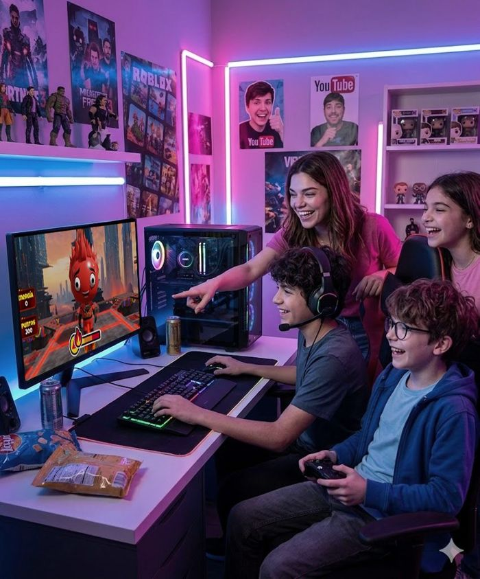
Un descenso a lomo del Dragón por los paisajes de Chile. Los jugadores esquivan obstáculos, recolectan naranjas y compiten por el mejor recorrido de la semana. Cada dos semanas se abre un tramo nuevo.
Branding: lobby y laterales con key visual · power up Vuelo Cítrico con la botella de Del Valle · pantallas de inicio y final · tramo nuevo cada dos semanas.
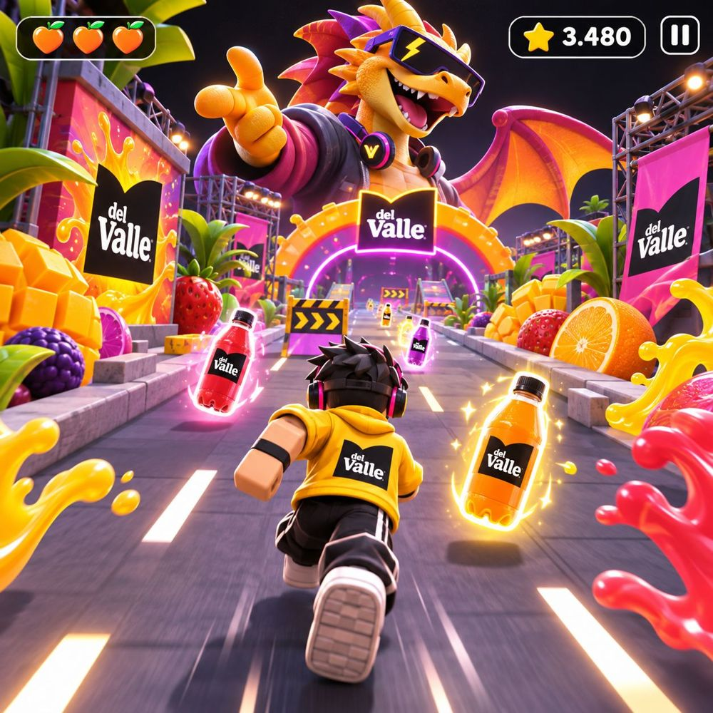
8 semanas, 4 tramos, un Dragón que crece
Cada dos semanas el viaje suma un tramo nuevo. En la semana 7, el recorrido completo dura 3 minutos.
Dragón: Cría
Dragón: Explorador
Dragón: Guardián
Dragón: Épico
Sorteo semanal · In-app teens y Parents · todas las semanas.
El viaje continúa: cuando termina el Back to School, el runner no se apaga, se convierte en un mundo. El Viaje Épico sigue disponible y se suma La Torre del Dragón. Motor: la meta comunitaria; lo que recolecta toda la comunidad en cada ciclo de dos semanas desbloquea una recompensa para todos.
Acceso al runner con sus 4 tramos.
El nuevo desafío vertical.
Canje de recompensas ganadas jugando.
Leaderboards del runner y de la torre.
Economía: Escamas ganadas en el runner y la torre. Nada se compra. · Un mundo abierto a crecer con nuevas actualizaciones y expansiones a lo largo del año.
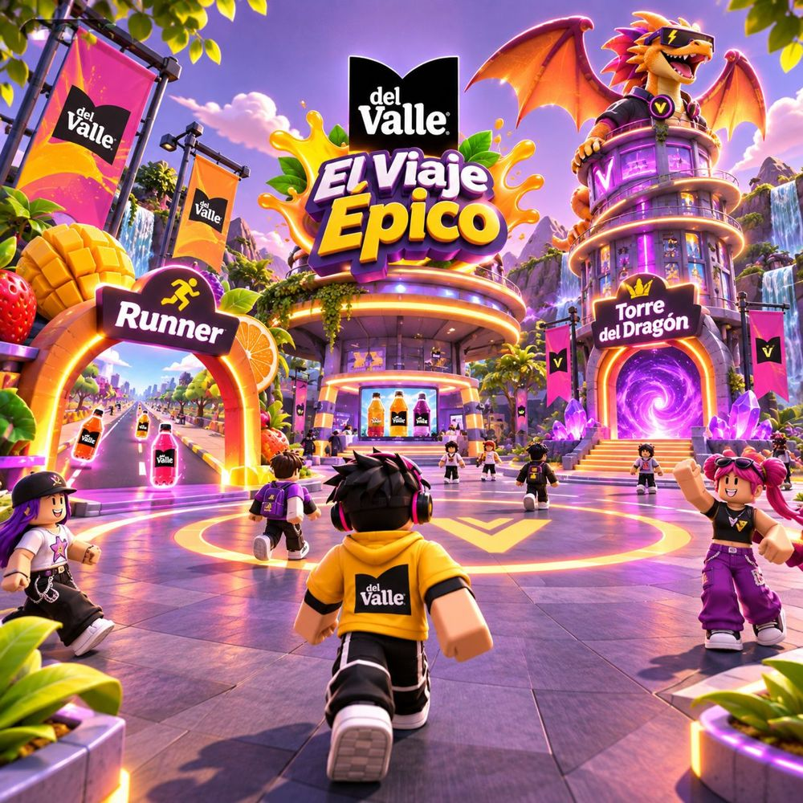
Llegar a la cima, encontrar al Dragón: un obby vertical contra el reloj. Los jugadores superan plataformas y obstáculos, y compiten por el mejor tiempo de subida. Cada nivel revive un tramo del viaje.
Ficha: obby vertical multijugador contra reloj · checkpoints en cada nivel · leaderboard de mejores tiempos.
Branding: Impulso Cítrico (doble salto) con la botella de Del Valle · key visual en checkpoints · el Dragón Épico en la cima.
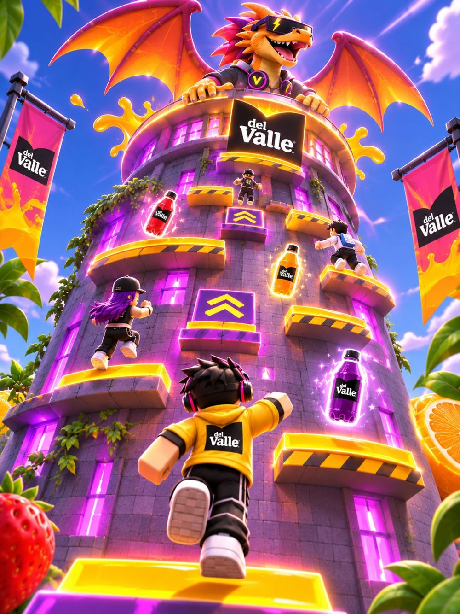
Amplificación · Teleport Portals · tráfico desde las experiencias top
Colocamos un portal de marca dentro de las experiencias más visitadas de Roblox. El jugador atraviesa el portal y entra al juego de Del Valle.
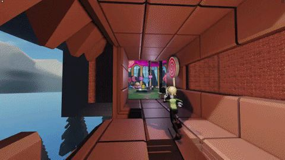
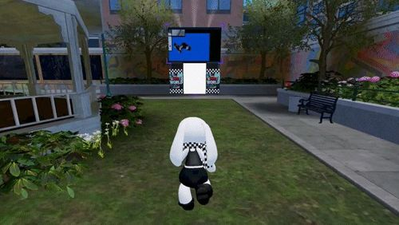
Elementos para generar engagement · mecánicas para que cada visita tenga una razón para volver
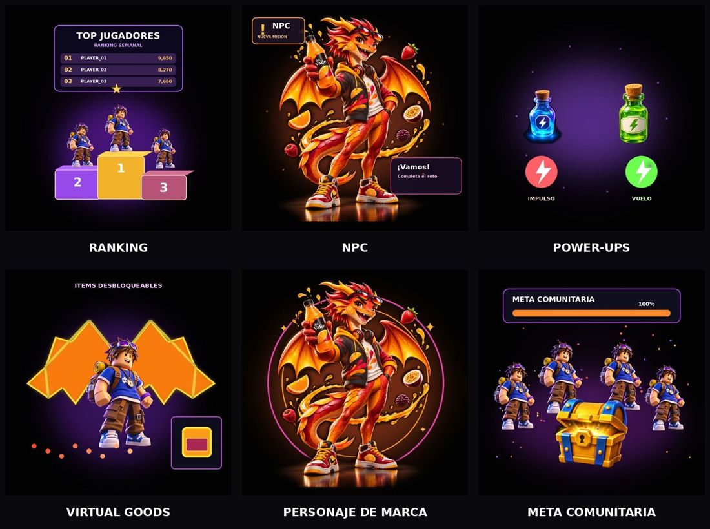
Muro de Leyendas con leaderboards semanales del runner y la torre.
El Dragón guía a los jugadores, presenta los desafíos y celebra cada logro.
Vuelo Cítrico e Impulso Cítrico: la botella de Del Valle como ventaja en el juego.
Alas, mochila y estela del Dragón. Ítems que se ganan jugando, nunca comprando.
Un Dragón que evoluciona con la campaña y se vuelve el rostro del mundo.
El progreso colectivo desbloquea recompensas. Nadie queda atrás por no jugar un día.
Dinámicas transaccionales · códigos con diferentes fines: CRM, estimular la jugabilidad y/o la venta de productos
Códigos desde RRSS redimibles en la experiencia.
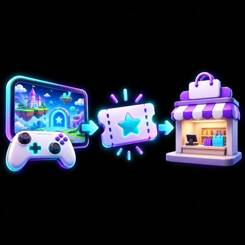
ON → OFFCódigos entregados dentro de la experiencia, canjeables en puntos físicos.
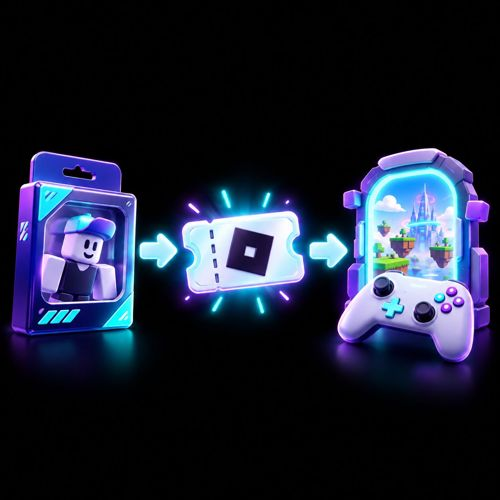
OFF → ONCódigos en productos o espacios físicos, redimibles dentro de la experiencia.
Cada decisión está alineada con la Política de Marketing Responsable de The Coca-Cola Company y con el marco regulatorio chileno.
Roblox se activa solo para audiencias mayores de 13 años.
Cada entorno se valida con data propietaria antes de activarse.
En Roblox, todo se gana jugando. Nada se compra.
Gift cards con bases publicadas y participación regulada.
Del primer tramo a la comunidad · indicadores
Jugadores únicos · Impresiones de billboards · Teleport Rate
Tiempo promedio de juego · Sesiones · Interacciones in-game · Interacción in-app
Replay Rate · Retorno en cada expansión · Metas comunitarias cumplidas
Migración del runner al Valle · Llegada a la cima · Mejora de tiempos · Juego cruzado
CTR a la landing del sorteo · Impresiones
Non-skippable instala “El viaje épico” en los canales que los chicos ya miran.
Bumper · In-Stream Skippable y Non-Skippable · Shorts
U18 (5-17) y Teens (13-17)
CTV, mobile y desktop
Awareness · formato de video
CPM / CPV
Impresiones · Views
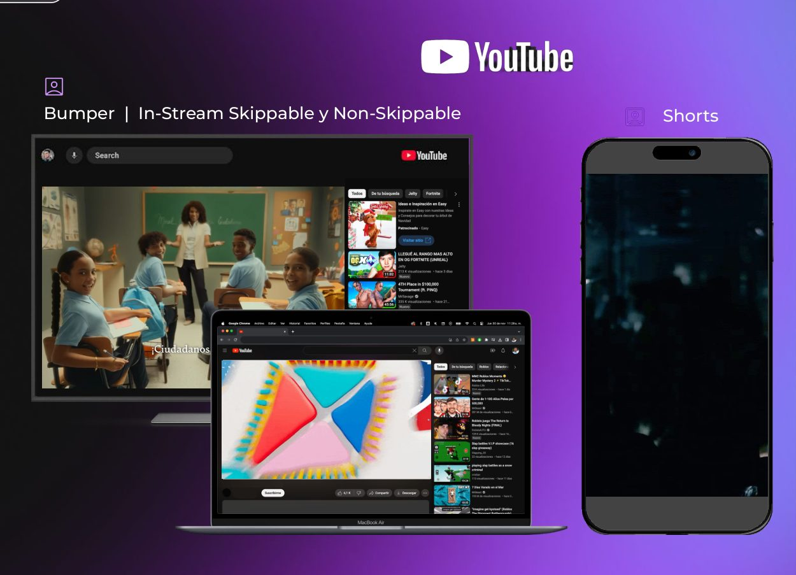
El Viaje épico, en las Apps donde ya están: GameAds interactivos para teens (+13), con CTA directo al mundo de Roblox.
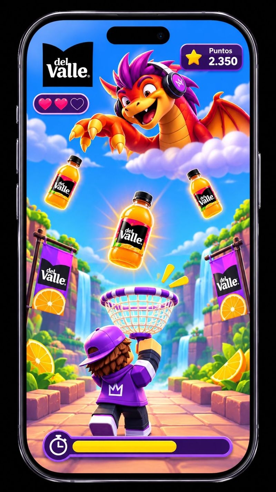
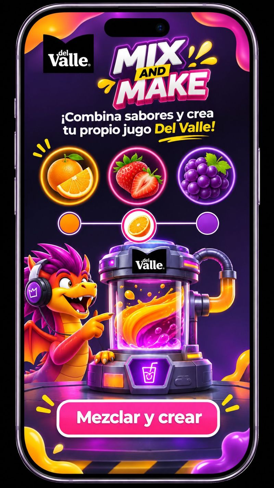
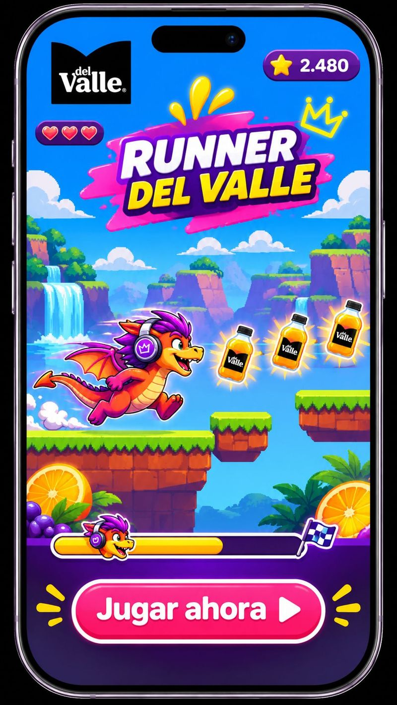
Formatos desarrollados tras una década de datos de performance de campañas. En el Creative Lab identificamos micro-segmentos y testeamos múltiples versiones para entregar el mensaje correcto a cada uno.
Calibramos la curva de atención, ni tan simple que aburra, ni tan compleja que frustre, ajustada a cada rango etario.
De ‘Tap’ a ‘Press’. Adaptamos la UI a sus habilidades motrices diseñando interfaces que mantienen el interés.
4 · Entregar · U18 DSP · Smart Bidding
Smart Bidding y pujas predictivas sobre inventario validado para U18: YouTube y apps kid-safe, con frecuencia ajustada por edad y zero PII.
Comportamiento · Panel U18 propio
Contexto · Contenido, a escala
Histórico · Performance de campañas
Modelo predictivo + Smart Bidding. Cada impresión se evalúa y se pricea en tiempo real.
placements · formatos · dispositivos · daypart · días · frecuencia
Privacy by design · sin PII · sin perfilado individual. Fuente: U18 DSP · U18 Prediction Engine.
Inversión
Un solo plan en dos fases. La pauta de YouTube y de in-app va bonificada.
Fase 1 + Fase 2 · pauta de YouTube e in-app bonificada
5 · Medir · Reporting en vivo
Conocé exactamente quién vio tu ad en real time con el Reporting del DSP U18.
Alcance on-target por segmento de edad, contra lo proyectado.
Impresiones, frecuencia, VTR en YouTube, VCR y CTR, CPM vs. benchmark.
Dashboard en vivo, pacing semanal y reporte final con insights y recomendaciones por segmento.